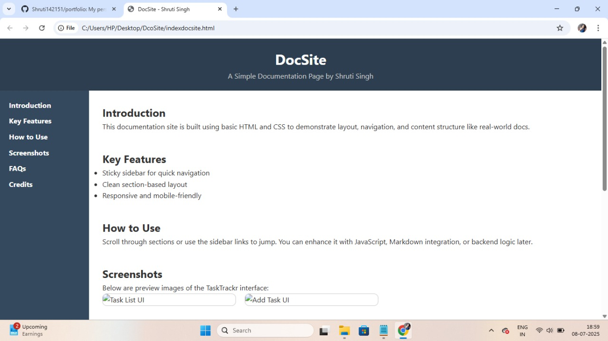
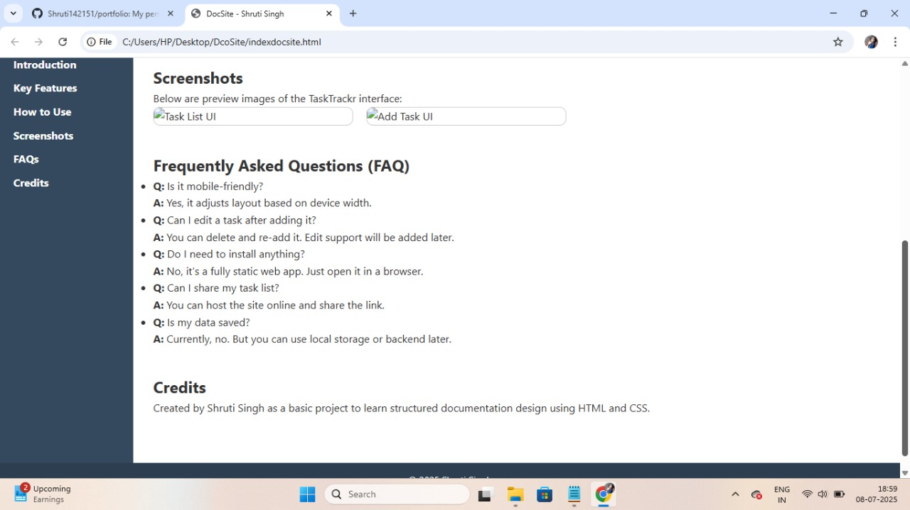

Introduction
This documentation site is built using basic HTML and CSS to demonstrate layout, navigation, and content structure like real-world docs.
Key Features
- Sticky sidebar for quick navigation
- Clean section-based layout
- Responsive and mobile-friendly
How to Use
Scroll through sections or use the sidebar links to jump. You can enhance it with JavaScript, Markdown integration, or backend logic later.
Screenshots
Below are preview images of the TaskTrackr interface:


Frequently Asked Questions (FAQ)
- Q: Is it mobile-friendly?
A: Yes, it adjusts layout based on device width. - Q: Can I edit a task after adding it?
A: You can delete and re-add it. Edit support will be added later. - Q: Do I need to install anything?
A: No, it's a fully static web app. Just open it in a browser. - Q: Can I share my task list?
A: You can host the site online and share the link. - Q: Is my data saved?
A: Currently, no. But you can use local storage or backend later.
Credits
Created by Shruti Singh as a basic project to learn structured documentation design using HTML and CSS.